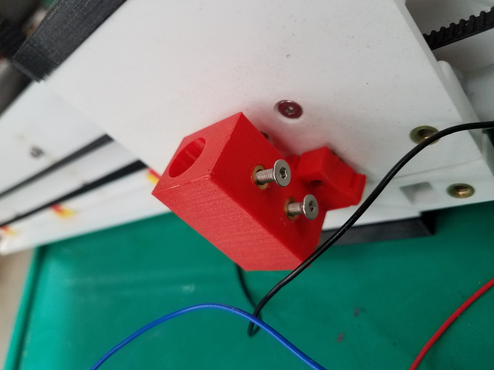
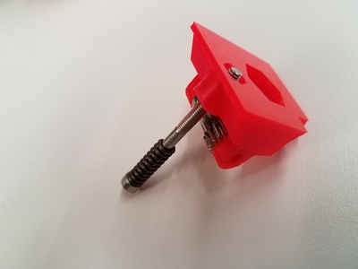
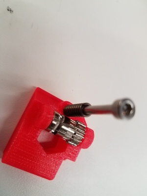
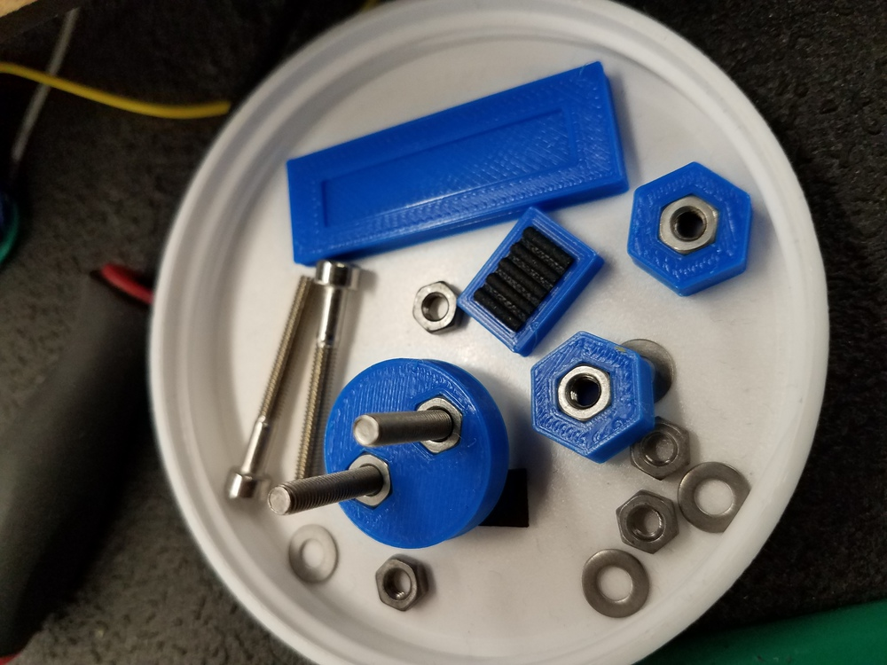
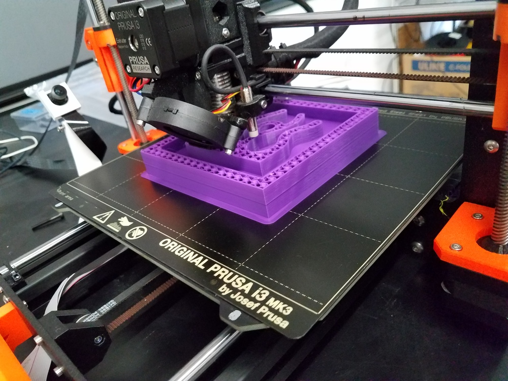
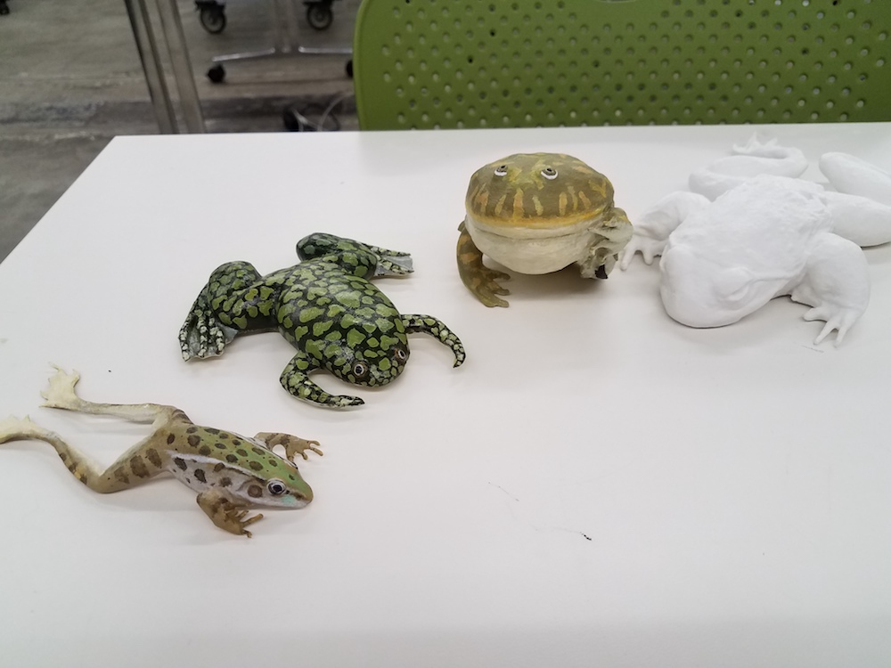

<h3> Additive Manufacturing technologies</h3>
<p>
<ul>
<li>Fused deposition modeling or FDM (spooled filament), e.g., <a href='https://www.prusa3d.com/'>Prusa</a>, <a href='https://www.flashforge.com/product-detail/flashforge-creator-3-fdm-3d-printer'>FlashForge</a>. </li>
<li>Selective laser sintering (powder).</li>
<li>Stereolithography (UV-cured resin), e.g., <a href='https://formlabs.com/'>Formlabs.</a></li>
</ul>
</p>
<h3> SC 102 3D Printing Protocols: </h3>
<p> <ul>
<li>You don’t need to sign in or have a buddy if you’re just starting or retrieving a 3D print. </li>
<li>You may use the shared SD cards and adapters in the lab. Files will be deleted periodically. When preparing a gcode file, the file name should include your first name so we know who is printing what. </li>
<li>If a print is obviously failing, you may stop it. You may also wish to clear the print bed and restart the print. </li>
<li>Never walk away from a broken printer. If a printer is damaged, please try to repair it yourself. If you don’t know how, please ask someone on staff to help. </li>
<li>You may remove finished prints from printbeds, and set them on the table nearby. </li>
<li>Academic use only. No tchotchkes, no production runs. </li>
<li>Long prints (more than 4 hours) should be avoided during peak demand times (~10am-10pm). </li>
<li>Watch the first layer to make sure the print starts successfully. Afterwards it’s fine to leave printers unattended. </li>
<li>No experimental filaments (without special permission). PLA only. </li>
</ul>
</p>
<p>Parts to characterize printer perforance:
<!-- (from <a href='http://academy.cba.mit.edu/classes/scanning_printing/index.html'>How to Make)</a>: -->
</p>
<img src='http://academy.cba.mit.edu/classes/scanning_printing/designrules.jpg' alt='printer characterization'>
<h3>Applications and limitations</h3>
<p> 1. Parts for devices: <br>




<img width="400" src="./part4.jpg" alt="part4">
<br>
</p>
<p> 2. Making things additively that cannot easily be made subtractively: <br>
</p>
<p> 3. Making things additively that <b>could</b> easily be made subtractively: <br>
<img width="400" src="./mold1.jpg" alt="mold1">

</p>
<p> 4. Educational and art objects: <br>
Frogs, scanned with photogrammetry, 3D printed, and painted 2018-2020 by Mara Laslo and collaborators at Natural History Museum. <br>

<br>
</p>
### Limitations
- Dimensional limitations
- Time limitations
- Material limitations
### 3D Modelling Software
- <a href='https://en.wikipedia.org/wiki/STL_(file_format)'>Stl files</a>
- Modeling software. Fusion and many others.
- <a href='https://github.com/hanskellner/Fusion360Image2Surface'>convert Bitmap to stl via Fusion 360.
### 3D Scanning Software
- Structured light <a href='https://www.3dsystems.com/3d-scanners/sense-scanner'>Sense Scanner.</a>
- Artek Spider high resolution scans <a href='https://www.artec3d.com/portable-3d-scanners/artec-spider?utm_source=google&utm_medium=cpc&utm_campaign=9317869662&utm_term=%2Bartec%20%2Bspider||kwd-57671099541&utm_content=99820306731||&keyword=%2Bartec%20%2Bspider&gclid=EAIaIQobChMIodqigory5wIVxJyzCh1UIARKEAAYASAAEgLpvPD_BwE'> Link to website.</a>
- Photogrammetry: <a href='https://alicevision.org/'>Alicevision </a> and <a href='https://github.com/alicevision/meshroom'>Meshroom.</a>
### Preparing to print
Slicers
- <a href='https://www.flashforge.com/product-detail/FlashPrint-slicer-for-flashforge-fdm-3d-printers'>FlashPrint</a>: Use for multi-material prints with the FlashForge printer.
- <a href='https://ultimaker.com/software/ultimaker-cura'>Cura</a>: Use for Ultimaker and others
- <a href='https://www.prusa3d.com/drivers/'>Prusa</a>: Recommended for Prusa printers
- <a href='https://formlabs.com/software/'>Formlabs "Preform"</a>
Browser-based slicers (use with caution)
- <a href='https://grid.space/kiri/'>Kiri Moto</a>
- <a href='https://www.astroprint.com/'>Astroprint</a>
- <a href='https://icesl.loria.fr/slicecrafter/'>Slicecrafter</a>
G-code
- <a href='./sample.gcode'>Sample g-code</a>
- <a href='https://reprap.org/wiki/G-code'>G-code wiki</a>